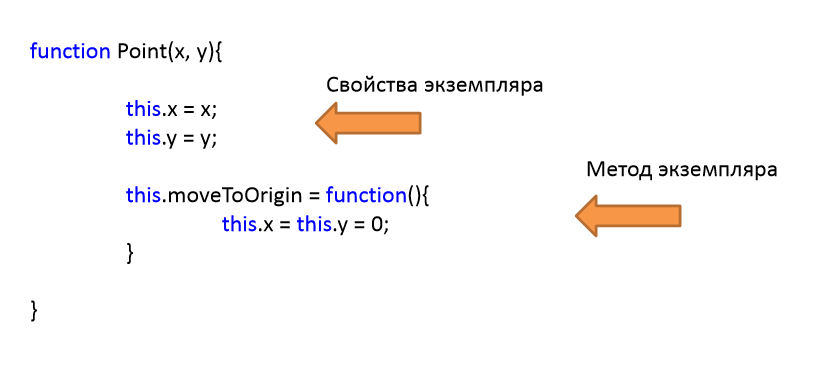
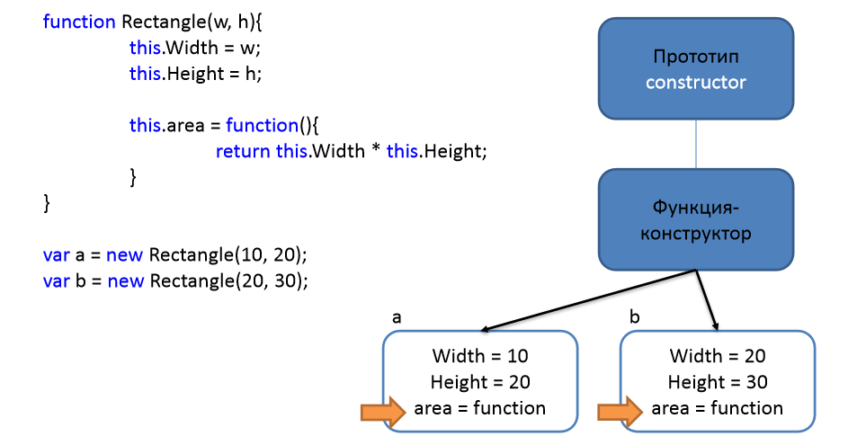
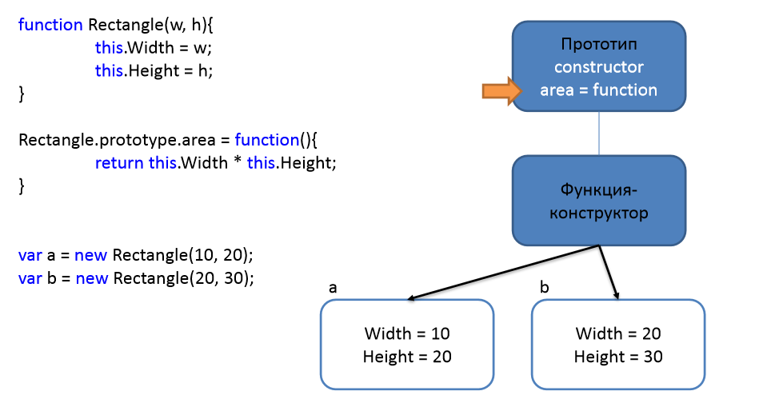
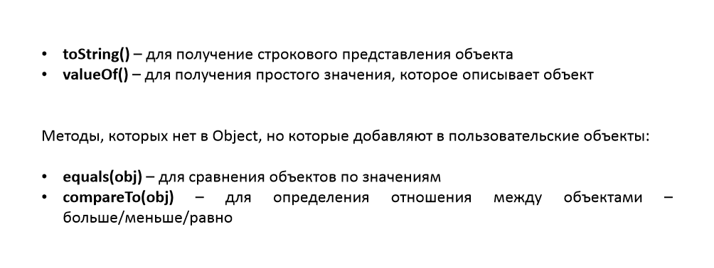
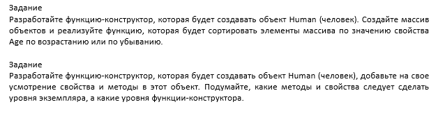

JavaSript
Прототипы и конструкторы JavaScript
- Базовые конструкторы
- Прототипы
- ООП в JS
Обычный синтаксис {...} позволяет создать только один объект. Но зачастую нам нужно создать множество однотипных объектов, таких как пользователи, элементы меню и т.д.
Это можно сделать при помощи функции-конструктора и оператора "new".
 


- Создайте функцию-конструктор Calculator, который создаёт объекты с тремя методами:
- read() запрашивает два значения при помощи prompt и сохраняет их значение в свойствах объекта.
- sum() возвращает сумму введённых свойств.
- mul() возвращает произведение введённых свойств.
- 
Смотреть с начала до промисов это где-то 1час 35 минут